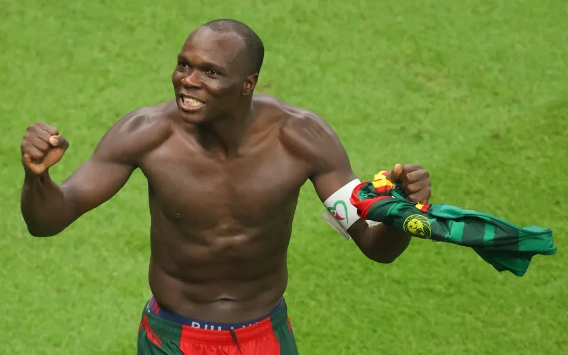

Vincent Aboubakar
The Cameroonian Legend Football Player

Vincent Aboubakar when he scored the winning goal against brazil - World Cup 2022
Who is Vincent Aboubaker?
- He is a famous Cameroonian football player who has won the hearts of all Cameroonians with the outstanding goal he scored against Brazil in the World Cup 2022
- He was born 22nd January 1992 and is alive till date 4th Decenber 2022
- He is currently married with a beautiful wife and has beutiful children. That's a happy family to me.
- He also plays as a striker for Saudi Professional League club Al Nassr and captains the Cameroon national team.
- Aboubakar began his career at Coton Sport and moved to Europe in 2010, playing for Ligue 1 clubs Valenciennes and Lorient, totalling 109 appearances and 26 goals in France's top division.
- In 2014, he signed for Porto, where he played 125 games and scored 58 goals, winning a Primeira Liga title.
- His latest achievement as of today 4th December 2022 is the outstanding goal he scored in the match against brazil making Cameroon emerge victorious. (Cameroon 1:0 Brazil)